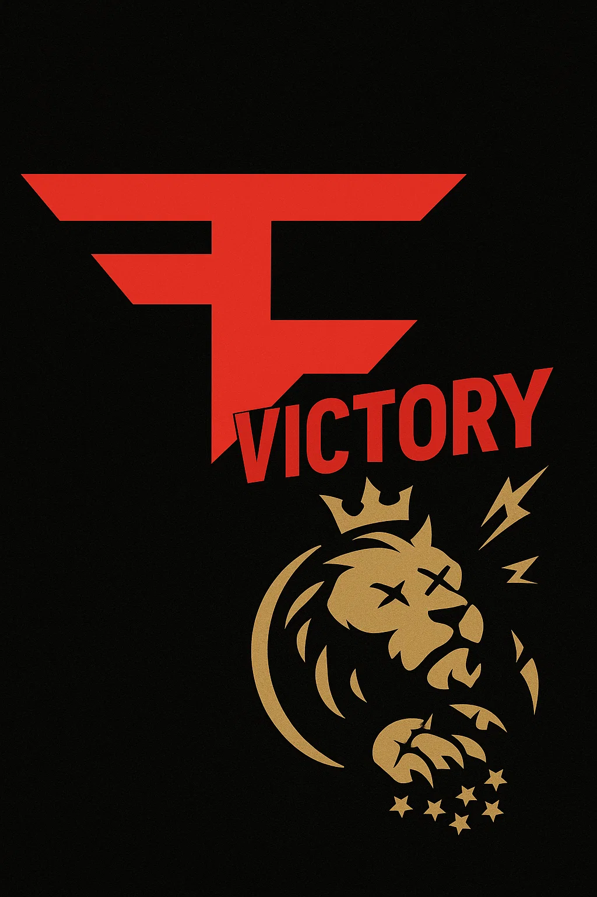

Faze Klanek alde handiarekin irabazi dio Mad Lionsi!
Partida ikusgarri batean, Faze Klanek bere nagusitasuna erakutsi zuen Mad Lionsen aurrean, erronda guztiak estrategiaz eta zehaztasunez menderatuz
Garaipen honekin, Faze Klanek bere lekua ziurtatu du finalean